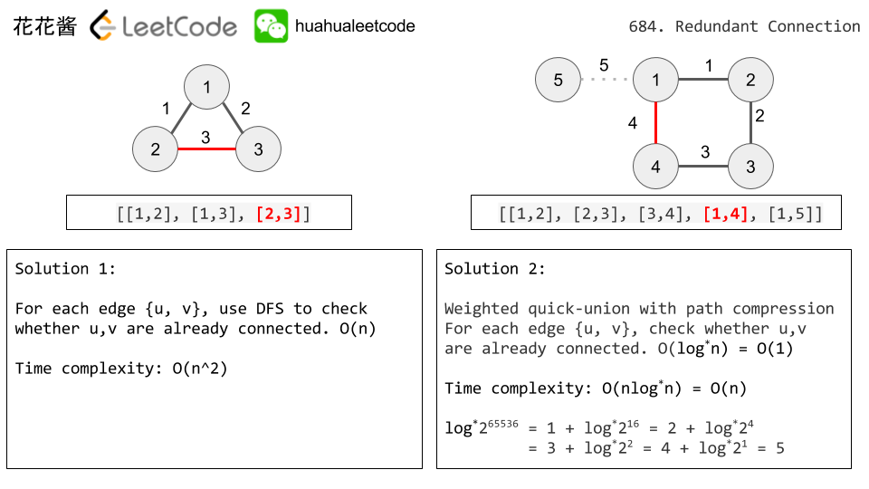

Leetcode 684. Redundant Connection
题目大意：给我们一个无向图，让我们删掉组成环的最后一条边
In this problem, a tree is an undirected graph that is connected and has no cycles.
The given input is a graph that started as a tree with N nodes (with distinct values 1, 2, ..., N), with one additional edge added. The added edge has two different vertices chosen from 1 to N, and was not an edge that already existed.
The resulting graph is given as a 2D-array of edges. Each element of edges is a pair [u, v] with u < v, that represents an undirected edge connecting nodes u and v.
Return an edge that can be removed so that the resulting graph is a tree of N nodes. If there are multiple answers, return the answer that occurs last in the given 2D-array. The answer edge [u, v] should be in the same format, with u < v.
Example 1:
Input: [[1,2], [1,3], [2,3]]
Output: [2,3]
Explanation: The given undirected graph will be like this:
1
/ \
2 - 3
Example 2:
Input: [[1,2], [2,3], [3,4], [1,4], [1,5]]
Output: [1,4]
Explanation: The given undirected graph will be like this:
5 - 1 - 2
| |
4 - 3
Note:
- The size of the input 2D-array will be between 3 and 1000.
- Every integer represented in the 2D-array will be between 1 and N, where N is the size of the input array.
Difficulty:Medium
Category:
Solution
Solution 1: Union Find
Cite: 花花酱 LeetCode 684. Redundant Connection


class UnionFindSet {
public:
UnionFindSet(int n) {
parents_ = vector<int>(n + 1, 0);
ranks_ = vector<int>(n + 1, 0);
for (int i = 0; i < parents_.size(); ++i) parents_[i] = i;
}
bool Union(int u, int v) {
int pu = Find(u);
int pv = Find(v);
if (pu == pv) return false;
if (ranks_[pu] > ranks_[pv]) {
parents_[pv] = pu;
} else if (ranks_[pv] > ranks_[pu]) {
parents_[pu] = pv;
} else {
parents_[pu] = pv;
++ranks_[pv];
}
return true;
}
int Find(int id) {
if (id != parents_[id]) parents_[id] = Find(parents_[id]);
return parents_[id];
}
private:
vector<int> parents_;
vector<int> ranks_;
};
class Solution {
public:
vector<int> findRedundantConnection(vector<vector<int>>& edges) {
UnionFindSet s(edges.size());
for (const auto& edge : edges) {
if (!s.Union(edge[0], edge[1])) return edge;
}
return {};
}
};